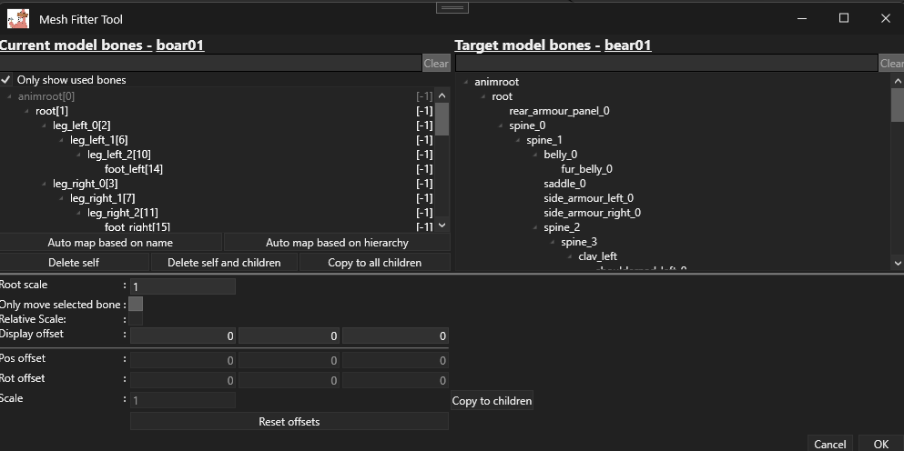

The Mesh Fitter Tool helps you make a mesh from one skeleton sit correctly on the skeleton that is already loaded in the Kitbash Editor.
In practice, it is the tool you use when a straight bone remap is not enough and the mesh still looks too large, too small, offset, twisted, or badly posed.
Short version: Mesh Fitter is for shape, pose, and proportion correction.
Re-rigging is for telling the mesh which target bones it should follow.
They are related, but they solve different parts of the problem. Both is often needed for a good result, but they are not the same thing.
What problems it solves
Making armor, clothing, heads, or creature parts sit correctly on a different target body.
Adjusting a mesh when the source and target skeletons are similar, but not identical in scale or pose.
Correcting limb length differences between source and target skeletons.
Applying small manual offsets to individual bones after auto-mapping.
Preparing a reference mesh so it looks right before you continue with the rest of your kitbash workflow.
Typical use cases
Head and body swaps where the new head fits the animation set, but does not line up cleanly in the default pose.
Armor or accessory transfers between units that share a similar skeleton family.
Creature part reuse where the source and target have comparable bone chains, but different proportions.
Public mod examples suggest this broader AssetEditor workflow is often used for jobs like putting a different head on an existing body or adapting a model that shares most of its animations with a close relative.
Those workshop pages are not Mesh Fitter tutorials by themselves, but they are good examples of the kind of problem this tool is meant to help with.

Simplified layout based on the current Mesh Fitter Tool UI screenshot.
The exact styling may change, but the workflow is the same: map bones on top, then correct the fit with scale and offsets below.
Before you open it
The editable model in the Kitbash Editor is the target. Its skeleton becomes the right-hand tree.
The selected mesh nodes are the source. Their skeleton becomes the left-hand tree.
All selected source meshes must come from the same source skeleton. If you mix skeletons, the tool refuses to open.
The tool works best when source and target bones have a clear semantic match: arm to arm, leg to leg, jaw to jaw, and so on.
How to use it
Open the target model in the Kitbash Editor.
Import or select the source mesh pieces you want to fit.
Select the source mesh nodes in the scene.
Open the Mesh Fitter Tool.
Use the left tree to choose source bones and the right tree to choose matching target bones.
Map the major structure first: root, spine, main limbs, neck, and head.
Try Auto map based on name if the skeleton naming is similar.
Try Auto map based on hierarchy if the branches match but names do not.
Adjust Root scale to get the overall size close.
Enable Relative scale if the target limbs are proportionally different but the bone roles still match.
Select individual source bones and use Pos offset, Rot offset, and Scale to fix the remaining issues.
Use Display offset only to move the preview skeleton for visibility while you work.
When the preview looks correct, press OK to commit the current fit to the selected meshes.
Good order of operations: map the main bones first, then fix the big size mismatch with Root scale,
then try Relative scale, and only after that start doing per-bone manual offsets.
What each control does
Control
What it does
When to use it
Only show used bones
Filters the source tree to the bones that actually influence the selected mesh.
Leave it on most of the time. Turn it off only if you need to inspect unused or helper bones.
Auto map based on name
Attempts to map the selected source bone and its children by matching names against the target skeleton.
Use it when source and target skeletons follow similar naming conventions.
Auto map based on hierarchy
Attempts to map the selected source branch using the currently selected target branch as the starting point.
Use it when the tree shape matches, but bone names differ.
Delete self / Delete self and children
Clears mapping data for the selected source bone, or the whole selected subtree.
Useful when auto-map made bad guesses.
Copy to all children
Copies the selected bone's current mapping to its descendants.
Useful for simple chains where many child bones should follow the same target area.
Root scale
Sets the overall base scale used during fitting.
Use this first when the entire source mesh is globally too large or too small.
Only move selected bone
Visible in the current UI, but disabled.
Ignore it for now.
Relative scale
Tries to scale a source bone relative to the length difference between the mapped target bone and its parent.
Helpful for limbs and spines when the source and target skeletons have matching roles but different proportions.
Display offset
Moves the temporary preview skeleton in the viewport.
Use this only to make the preview easier to see. It is not meant to be a saved modeling adjustment.
Pos offset / Rot offset / Scale
Applies per-bone fitting offsets to the currently selected source bone.
Use these for final cleanup after mapping and main scaling are in place.
Copy to children (next to Scale)
Copies the current bone scale offset to child bones.
Useful when an entire chain needs the same scale treatment.
Reset offsets
Resets the selected bone's manual position, rotation, and scale offsets.
Use it when a local tweak went in the wrong direction.
What to watch out for
Display offset is preview-only. Treat it as a viewport helper, not as a modeling change.
Auto-map works from the selected source bone downward. If you want to map most of the skeleton, start from the source root or a major branch.
Unmapped bones stay on the source side. That can be acceptable for tiny accessories, but it often causes visible problems on major moving parts.
The tool does not replace re-rigging. If the mesh still animates badly after fitting, the problem may be bone mapping or weights rather than the fit itself.
Selected source meshes should be from one skeleton family. Mixed-skeleton selections are rejected for a reason.
Use manual offsets sparingly. Large stacks of per-bone tweaks usually mean the base mapping is wrong or the source/target are too different.
Important: Mesh Fitter is a correction tool, not a miracle converter.
If the source and target skeletons have very different structure, orientation, or bone purpose,
the result will usually be unstable no matter how much tweaking you do.
When it struggles
When the source and target skeletons have very different topology.
When important bones have no clear one-to-one match.
When the skeletons use many helper, twist, cloth, or zero-length bones.
When the rest pose orientation is radically different.
When the mesh depends on carefully tuned weights that really need a full re-rigging pass.
When facial rigs, tails, wings, cloth chains, or very asymmetrical creature parts are involved.
Good candidates vs bad candidates
Usually works well
Usually needs more than Mesh Fitter
Human to human, or creature to close creature variant
Humanoid to creature, or creature to unrelated creature
Armor plates, helmets, accessories, heads, simple body parts
Complex face rigs, cloth-heavy pieces, or long chained appendages
Cases where names and hierarchy mostly line up
Cases where names are unrelated and bone roles are ambiguous
Proportion fixes and pose cleanup
Fundamental skeleton conversion or weight authoring
Related public references
Tutorial:AssetEditor on tw-modding.com -
public wiki documentation for AssetEditor. Its re-rigging section describes the one-to-one bone mapping workflow and mentions fitting the mesh onto the skeleton.
Masked Mustachio's Lady Ungrim -
workshop example where the author credits AssetEditor help for putting a female head on a different body.
This is a useful real-world example of the kind of compatible body-part swap Mesh Fitter supports.
The workshop links above are use-case references, not direct Mesh Fitter tutorials.
They are included because they show the kinds of problems modders solve with AssetEditor in practice.